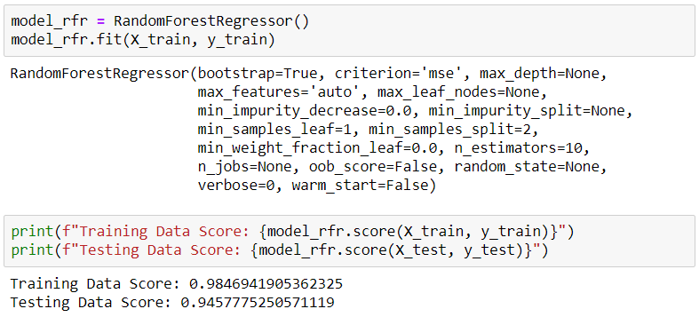
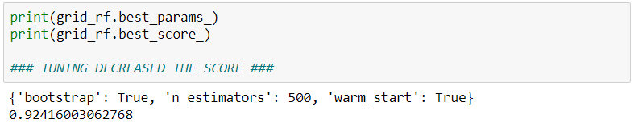
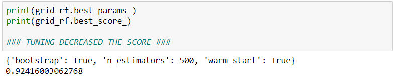
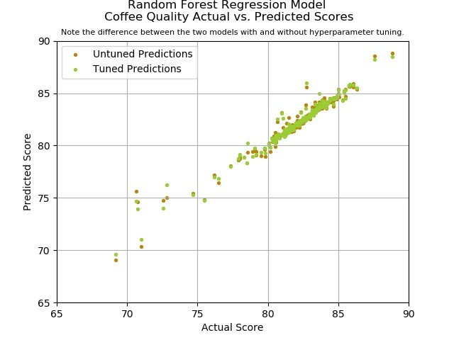
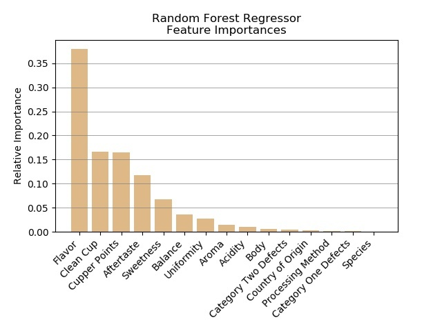

Random Forest Model
Again, we used a regressor (RandomForestRegressor instead of RandomForestClassifier) because our y values were continuous integers, not discrete classes. This model did not perform as well as the linear models or the retuned SVR model. Even with hyperparameter tuning, the R2 score decreased. Again, we plotted the predicted/actual scores for the tuned and untuned models
Scores before hyperparameter tuning:
 


We did uncover some new information from the random forest regression, however. We were able to answer our initial question of “what makes a really good cup of coffee?” i.e. which features are most important when evaluating coffee quality? We examined the most important features used for the model and found that flavor had by far the most impact on coffee quality, followed by clean cup and cupper points.
